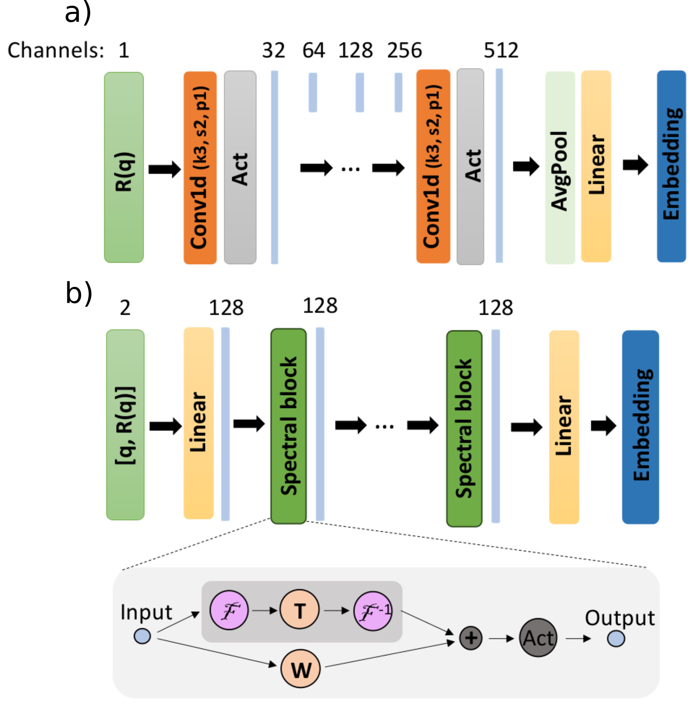

7. API Reference#
- class Params(thicknesses: Tensor, roughnesses: Tensor, slds: Tensor)[source]#
Bases:
AbstractParamsParameter class for thickness, roughness and sld parameters
- Parameters:
thicknesses (Tensor) – batch of thicknesses (top to bottom)
roughnesses (Tensor) – batch of roughnesses (top to bottom)
slds (Tensor) – batch of slds (top to bottom)
- reflectivity(q: Tensor, log: bool = False, **kwargs)[source]#
computes the reflectivity curves directly from the parameters
- Parameters:
q (Tensor) – the q values
log (bool, optional) – whether to apply logarithm to the curves. Defaults to False.
- Returns:
the simulated reflectivity curves
- Return type:
Tensor
- scale_with_q(q_ratio: float)[source]#
scales the parameters based on the q ratio
- Parameters:
q_ratio (float) – the scaling ratio
- property d_rhos#
computes the differences in SLD values of the neighboring layers
- as_tensor(use_drho: bool = False) Tensor[source]#
converts the instance of the class to a Pytorch tensor
- classmethod from_tensor(params: Tensor)[source]#
initializes an instance of the class from a Pytorch tensor containing the values of the parameters
- static size2layers_num(size: int) int[source]#
converts the number of parameters to the number of layers
- class PriorSampler[source]#
Bases:
objectBase class for prior samplers
- property param_dim: int#
gets the number of parameters (i.e. the parameter dimensionality)
- property max_num_layers: int#
gets the number of layers
- class BasicDataset(q_generator: QGenerator, prior_sampler: PriorSampler, intensity_noise: IntensityNoiseGenerator | None = None, q_noise: QNoiseGenerator | None = None, curves_scaler: CurvesScaler | None = None, calc_denoised_curves: bool = False, calc_nonsmeared_curves: bool = False, smearing: Smearing | None = None)[source]#
Bases:
objectReflectometry dataset. It generates the q positions, samples the thin film parameters from the prior, simulates the reflectivity curves and applies noise to the curves.
- Parameters:
q_generator (QGenerator) – the momentum transfer (q) generator
prior_sampler (PriorSampler) – the prior sampler
intensity_noise (IntensityNoiseGenerator, optional) – the intensity noise generator. Defaults to None.
q_noise (QNoiseGenerator, optional) – the q noise generator. Defaults to None.
curves_scaler (CurvesScaler, optional) – the reflectivity curve scaler. Defaults to an instance of LogAffineCurvesScaler, which scales the curves to the range [-1, 1], the minimum considered intensity being 1e-10.
calc_denoised_curves (bool, optional) – whether to add the curves without noise to the dictionary. Defaults to False.
calc_nonsmeared_curves (bool, optional) – whether to add the curves without smearing to the dictionary (only relevant when smearing is applied). Defaults to False.
smearing (Smearing, optional) – curve smearing generator. Defaults to None.
- update_batch_data(batch_data: Dict[str, Tensor | BasicParams]) None[source]#
implement in a subclass to edit batch_data dict inplace
- get_batch(batch_size: int) Dict[str, Tensor | BasicParams][source]#
get a batch of data as a dictionary with keys
params,scaled_params,q_values,curves,scaled_noisy_curves- Parameters:
batch_size (int) – the batch size
- class ConstantQ(q: Tensor | Tuple[float, float, int] = (0.0, 0.2, 128), device=device(type='cuda'), dtype=torch.float64, remove_zero: bool = False, fixed_zero: bool = False)[source]#
Bases:
QGeneratorQ generator for reflectivity curves with fixed discretization
- Parameters:
q (Union[Tensor, Tuple[float, float, int]], optional) – tuple (q_min, q_max, num_q) defining the minimum q value, maximum q value and the number of q points. Defaults to (0., 0.2, 128).
device (optional) – the Pytorch device. Defaults to DEFAULT_DEVICE.
dtype (optional) – the Pytorch data type. Defaults to DEFAULT_DTYPE.
remove_zero (bool, optional) – do not include the upper end of the interval. Defaults to False.
fixed_zero (bool, optional) – do not include the lower end of the interval. Defaults to False.
- class VariableQ(q_min_range: Tuple[float, float] = (0.01, 0.03), q_max_range: Tuple[float, float] = (0.1, 0.5), n_q_range: Tuple[int, int] = (64, 256), mode: str = 'equidistant', device=device(type='cuda'), dtype=torch.float64)[source]#
Bases:
QGeneratorQ generator for reflectivity curves with variable discretization
- Parameters:
q_min_range (list, optional) – the range for sampling the minimum q value of the curves, q_min. Defaults to [0.01, 0.03].
q_max_range (list, optional) – the range for sampling the maximum q value of the curves, q_max. Defaults to [0.1, 0.5].
n_q_range (list, optional) – the range for the number of points in the curves (equidistantly sampled between q_min and q_max, the number of points varies between batches but is constant within a batch). Defaults to [64, 256].
device (optional) – the Pytorch device. Defaults to DEFAULT_DEVICE.
dtype (optional) – the Pytorch data type. Defaults to DEFAULT_DTYPE.
- class LogAffineCurvesScaler(weight: float = 0.1, bias: float = 0.5, eps: float = 1e-10)[source]#
Bases:
CurvesScalerCurve scaler which scales the reflectivity curves according to the logarithmic affine transformation: \(\log_{10}(R + eps) \cdot weight + bias\).
- Parameters:
weight (float) – multiplication factor in the transformation
bias (float) – addition term in the transformation
eps (float) – sets the minimum intensity value of the reflectivity curves which is considered
- class MeanNormalizationCurvesScaler(path: str | None = None, curves_mean: Tensor | None = None, device: device = 'cuda')[source]#
Bases:
CurvesScalerCurve scaler which scales the reflectivity curves by the precomputed mean of a batch of curves
- Parameters:
path (str, optional) – path to the precomputed mean of the curves, only used if
curves_meanis None. Defaults to None.curves_mean (Tensor, optional) – the precomputed mean of the curves. Defaults to None.
device (torch.device, optional) – the Pytorch device. Defaults to ‘cuda’.
- scale(curves: Tensor)[source]#
scales the reflectivity curves to a ML-friendly range
- Parameters:
curves (Tensor) – original reflectivity curves
- Returns:
reflectivity curves scaled to a ML-friendly range
- Return type:
Tensor
- restore(curves: Tensor)[source]#
restores the physical reflectivity curves
- Parameters:
curves (Tensor) – scaled reflectivity curves
- Returns:
reflectivity curves restored to the physical range
- Return type:
Tensor
- static save(prior_sampler: PriorSampler, q: Tensor, path: str, num: int = 16384)[source]#
computes the mean of a batch of reflectivity curves and saves it
- Parameters:
prior_sampler (PriorSampler) – the prior sampler
q (Tensor) – the q values
path (str) – the path for saving the mean of the curves
num (int, optional) – the number of curves used to compute the mean. Defaults to 16384.
- get_density_profiles(thicknesses: Tensor, roughnesses: Tensor, slds: Tensor, ambient_sld: Tensor | None = None, z_axis: Tensor | None = None, num: int = 1000, padding_left: float = 0.2, padding_right: float = 1.1)[source]#
- Parameters:
thicknesses (Tensor) – finite layer thicknesses.
roughnesses (Tensor) – interface roughnesses for all transitions (ambient→layer1 … layerN→substrate).
slds (Tensor) – SLDs for the finite layers + substrate.
ambient_sld (Tensor, optional) – SLD for the top ambient. Defaults to 0.0 if None.
z_axis (Tensor, optional) – a custom depth axis. If None, a linear axis is generated.
num (int) – number of points in the generated z-axis (if z_axis is None).
padding_left (float) – factor to extend the negative (above the surface) portion of z-axis.
padding_right (float) – factor to extend the positive (into the sample) portion of z-axis.
- Returns:
- (z_axis, profile, d_profile)
z_axis: 1D Tensor of shape (num, ) with the depth coordinates. profile: 2D Tensor of shape (batch_size, num) giving the SLD at each depth. d_profile: 2D Tensor of shape (batch_size, num) giving d(SLD)/dz at each depth.
- reflectivity(q: Tensor, thickness: Tensor, roughness: Tensor, sld: Tensor, dq: Tensor | None = None, gauss_num: int = 51, constant_dq: bool = False, log: bool = False, q_shift: Tensor = 0.0, r_scale: Tensor = 1.0, background: Tensor = 0.0, solvent_vf=None, solvent_mode='fronting', abeles_func=None, **abeles_kwargs)[source]#
Function which computes the reflectivity curves from thin film parameters. By default it uses the fast implementation of the Abeles matrix formalism.
- Parameters:
q (Tensor) – tensor of momentum transfer (q) values with shape [batch_size, n_points] or [n_points]
thickness (Tensor) – tensor containing the layer thicknesses (ordered from top to bottom) with shape [batch_size, n_layers]
roughness (Tensor) – tensor containing the interlayer roughnesses (ordered from top to bottom) with shape [batch_size, n_layers + 1]
sld (Tensor) – tensor containing the layer SLDs (real or complex; ordered from top to bottom) with shape [batch_size, n_layers + 1] (excluding ambient SLD which is assumed to be 0) or [batch_size, n_layers + 2] (including ambient SLD; only for the default
abeles_func='abeles')dq (Tensor, optional) – tensor of resolutions used for curve smearing with shape [batch_size, 1]. Either dq if
constant_dqisTrueor dq/q ifconstant_dqisFalse. Defaults to None.gauss_num (int, optional) – the number of gaussians for curve smearing. Defaults to 51.
constant_dq (bool, optional) – if
Truethe smearing is constant (constant dq at each point in the curve) otherwise the smearing is linear (constant dq/q at each point in the curve). Defaults to False.log (bool, optional) – if True the base 10 logarithm of the reflectivity curves is returned. Defaults to False.
q_shift (float or Tensor, optional) – misalignment in q.
r_scale (float or Tensor, optional) – normalization factor (scales reflectivity).
background (float or Tensor, optional) – background intensity.
abeles_func (Callable, optional) – a function implementing the simulation of the reflectivity curves, if different than the default Abeles matrix implementation (‘abeles’). Defaults to None.
abeles_kwargs – Additional arguments specific to the chosen abeles_func.
- Returns:
the computed reflectivity curves
- Return type:
Tensor
- class Smearing(sigma_range: tuple = (0.01, 0.1), constant_dq: bool = False, gauss_num: int = 31, share_smeared: float = 0.2)[source]#
Bases:
objectClass which applies resolution smearing to the reflectivity curves. The intensity at a q point will be the average of the intensities of neighbouring q points, weighted by a gaussian profile.
- Parameters:
sigma_range (tuple, optional) – the range for sampling the resolutions. Defaults to (0.01, 0.1).
constant_dq (bool, optional) – if
Truethe smearing is constant (the resolution is given by the constant dq at each point in the curve) otherwise the smearing is linear (the resolution is given by the constant dq/q at each point in the curve). Defaults to True.gauss_num (int, optional) – the number of interpolating gaussian profiles. Defaults to 31.
share_smeared (float, optional) – the share of curves in the batch for which the resolution smearing is applied. Defaults to 0.2.
- class LogLikelihood(q: Tensor, exp_curve: Tensor, priors: PriorSampler, sigmas: float | Tensor)[source]#
Bases:
objectComputes the gaussian log likelihood of the thin film parameters
- Parameters:
q (Tensor) – the q values
exp_curve (Tensor) – the experimental reflectivity curve
priors (PriorSampler) – the prior sampler
sigmas (Union[float, Tensor]) – the sigmas (i.e. intensity error bars)
- class GaussianExpIntensityNoise(relative_errors: Tuple[float, float] = (0.001, 0.15), consistent_rel_err: bool = False, apply_shift: bool = False, shift_range: tuple = (-0.1, 0.002), apply_background: bool = False, background_range: tuple = (1e-10, 1e-08), same_background_across_channels: bool = False, add_to_context: bool = False)[source]#
Bases:
IntensityNoiseGeneratorA composite noise generator that applies Gaussian, shift and background noise to reflectivity curves.
This class combines three types of noise: 1. Gaussian noise: Applies Gaussian noise (to account for count-based Poisson noise as well as other sources of error) 2. Shift noise: Applies a multiplicative shift to the curves, equivalent to a vertical shift in logarithmic space. 3. Background noise: Adds a constant background value to the curves.
- Parameters:
relative_errors (Union[float, Tuple[float, float], List[Tuple[float, float]]]) – The range of relative errors for Gaussian noise. Defaults to (0.001, 0.15).
consistent_rel_err (bool, optional) – If True, uses a consistent relative error for Gaussian noise across all points in a curve. Defaults to False.
shift_range (tuple, optional) – The range of shift factors for shift noise. Defaults to (-0.1, 0.2e-2).
background_range (tuple, optional) – The range from which the background value is sampled. Defaults to (1.0e-10, 1.0e-8).
apply_shift (bool, optional) – If True, applies shift noise to the curves. Defaults to False.
apply_background (bool, optional) – If True, applies background noise to the curves. Defaults to False.
same_background_across_channels (bool, optional) – If True, the same background is applied to all channels of a multi-channel curve. Defaults to False.
add_to_context (bool, optional) – If True, adds generated noise parameters to the context dictionary. Defaults to False.
- class BasicQNoiseGenerator(apply_systematic_shifts: bool = True, shift_std: float = 0.001, apply_gaussian_noise: bool = False, noise_std: float | Tuple[float, float] = (0, 0.001), add_to_context: bool = False)[source]#
Bases:
QNoiseGeneratorQ noise generator which applies both systematic shifts (same change for all q points in the curve) and random noise (different changes per q point in the curve)
- Parameters:
shift_std (float, optional) – the standard deviation of the normal distribution for systematic q shifts (i.e. same change applied to all q points in the curve). Defaults to 1e-3.
noise_std (Union[float, Tuple[float, float]], optional) – the standard deviation of the normal distribution for random q noise (i.e. different changes applied to each q point in the curve). The standard deviation is the same for all curves in the batch if provided as a float, or uniformly sampled for each curve in the batch if provided as a tuple. Defaults to (0, 1e-3).
- class ConstantAngle(angle_range: Tuple[float, float, int] = (0.0, 0.2, 257), wavelength: float = 1.0, device=device(type='cuda'), dtype=torch.float64)[source]#
Bases:
QGeneratorQ generator for reflectivity curves measured at equidistant angles
- Parameters:
angle_range (Tuple[float, float, int], optional) – the range of the incident angles. Defaults to (0., 0.2, 257).
wavelength (float, optional) – the beam wavelength in units of angstroms. Defaults to 1.
device (optional) – the Pytorch device. Defaults to DEFAULT_DEVICE.
dtype (optional) – the Pytorch data type. Defaults to DEFAULT_DTYPE.
- class SubpriorParametricSampler(param_ranges: Dict[str, Tuple[float, float]], bound_width_ranges: Dict[str, Tuple[float, float]], model_name: str, device: device = device(type='cuda'), dtype: dtype = torch.float64, max_num_layers: int = 50, logdist: bool = False, scale_params_by_ranges=False, scaled_range: Tuple[float, float] = (-1.0, 1.0), **kwargs)[source]#
Bases:
PriorSampler,ScalerMixin- PARAM_CLS#
alias of
BasicParams
- property max_num_layers: int#
gets the maximum number of layers
- property param_dim: int#
get the number of parameters (parameter dimensionality)
- sample(batch_size: int) BasicParams[source]#
sample a batch of parameters
- Parameters:
batch_size (int) – the batch size
- Returns:
sampled parameters
- Return type:
- scale_params(params: BasicParams) Tensor[source]#
scale the parameters to a ML-friendly range
- Parameters:
params (BasicParams) – the parameters to be scaled
- Returns:
the scaled parameters
- Return type:
Tensor
- restore_params(scaled_params: Tensor) BasicParams[source]#
restore the parameters to their original range
- Parameters:
scaled_params (Tensor) – the scaled parameters
- Returns:
the parameters restored to their original range
- Return type:
- class BasicParams(parameters: Tensor, min_bounds: Tensor, max_bounds: Tensor, max_num_layers: int | None = None, param_model: ParametricModel | None = None)[source]#
Bases:
AbstractParamsParameter class compatible with different parameterizations of the SLD profile. It stores the parameters as well as their minimum and maximum subprior bounds.
- Parameters:
parameters (Tensor) – the values of the thin film parameters
min_bounds (Tensor) – the minimum subprior bounds of the parameters
max_bounds (Tensor) – the maximum subprior bounds of the parameters
max_num_layers (int, optional) – the maximum number of layers (for box model parameterizations it is the number of layers). Defaults to None.
param_model (ParametricModel, optional) – the parametric model. Defaults to the box model parameterization with number of layers given by max_num_layers.
- reflectivity(q: Tensor, log: bool = False, **kwargs)[source]#
computes the reflectivity curves directly from the parameters
- Parameters:
q (Tensor) – the q values
log (bool, optional) – whether to apply logarithm to the curves. Defaults to False.
- Returns:
the simulated reflectivity curves
- Return type:
Tensor
- property max_layer_num: int#
gets the maximum number of layers
- property num_params: int#
get the number of parameters (parameter dimensionality)
- property thicknesses#
gets the thicknesses
- property roughnesses#
gets the roughnesses
- property slds#
gets the slds
- property real_slds#
gets the real part of the slds
- property imag_slds#
gets the imaginary part of the slds (only for complex dtypes)
- as_tensor(add_bounds: bool = True, **kwargs) Tensor[source]#
converts the instance of the class to a Pytorch tensor
- Parameters:
add_bounds (bool, optional) – whether to add the subprior bounds to the tensor. Defaults to True.
- Returns:
the Pytorch tensor obtained from the instance of the class
- Return type:
Tensor
- class ParametricModel(max_num_layers: int, **kwargs)[source]#
Bases:
objectBase class for parameterizations of the SLD profile.
- Parameters:
max_num_layers (int) – the number of layers
- property param_dim: int#
get the number of parameters
- Return type:
int
- property sampler_strategy: SamplerStrategy#
get the sampler strategy
- Return type:
- reflectivity(q, parametrized_model: Tensor, **kwargs) Tensor[source]#
computes the reflectivity curves
- Parameters:
q – the reciprocal space (q) positions
parametrized_model (Tensor) – the values of the parameters
- Returns:
the computed reflectivity curves
- Return type:
Tensor
- init_bounds(param_ranges: Dict[str, Tuple[float, float]], bound_width_ranges: Dict[str, Tuple[float, float]], device=None, dtype=None) Tuple[Tensor, Tensor, Tensor, Tensor][source]#
initializes arrays storing individually the upper and lower bounds from the dictionaries of parameter and bound width ranges
- Parameters:
param_ranges (Dict[str, Tuple[float, float]]) – parameter ranges
bound_width_ranges (Dict[str, Tuple[float, float]]) – bound width ranges
device (optional) – the Pytorch device. Defaults to None.
dtype (optional) – the Pytorch datatype. Defaults to None.
- Return type:
Tuple[Tensor, Tensor, Tensor, Tensor]
- get_param_labels(**kwargs) List[str][source]#
get the list with the name of the parameters
- Return type:
List[str]
- sample(batch_size: int, total_min_bounds: Tensor, total_max_bounds: Tensor, total_min_delta: Tensor, total_max_delta: Tensor)[source]#
samples the parameter values and their prior bounds
- Parameters:
batch_size (int) – the batch size
total_min_bounds (Tensor) – lower bounds of the parameter ranges
total_max_bounds (Tensor) – upper bounds of the parameter ranges
total_min_delta (Tensor) – lower widths of the subprior intervals
total_max_delta (Tensor) – upper widths of the subprior intervals
- Returns:
sampled parameters
- Return type:
Tensor
- class BasicSamplerStrategy(logdist: bool = False)[source]#
Bases:
SamplerStrategySampler strategy with no constraints on the values of the parameters
- Parameters:
logdist (bool, optional) – if True the relative widths of the subprior intervals are sampled uniformly on a logarithmic scale instead of uniformly. Defaults to False.
- sample(batch_size: int, total_min_bounds: Tensor, total_max_bounds: Tensor, total_min_delta: Tensor, total_max_delta: Tensor)[source]#
- Parameters:
batch_size (int) – the batch size
total_min_bounds (Tensor) – mimimum values of the parameters
total_max_bounds (Tensor) – maximum values of the parameters
total_min_delta (Tensor) – minimum widths of the subprior intervals
total_max_delta (Tensor) – maximum widths of the subprior intervals
- Returns:
samples the values of the parameters and their prior bounds (params, min_bounds, max_bounds). The widths W of the subprior interval are sampled first, then the centers C of the subprior interval, such that the prior bounds are C-W/2 and C+W/2, then the parameters are sampled from [C-W/2, C+W/2] )
- Return type:
tuple(Tensor)
- class ConstrainedRoughnessSamplerStrategy(thickness_mask: Tensor, roughness_mask: Tensor, logdist: bool = False, max_thickness_share: float = 0.5, max_total_thickness: float | None = None)[source]#
Bases:
BasicSamplerStrategySampler strategy where the roughnesses are constrained not to exceed a fraction of the two neighboring thicknesses
- Parameters:
thickness_mask (Tensor) – indices in the tensors which correspond to thicknesses
roughness_mask (Tensor) – indices in the tensors which correspond to roughnesses
logdist (bool, optional) – if
Truethe relative widths of the subprior intervals are sampled uniformly on a logarithmic scale instead of uniformly. Defaults to False.max_thickness_share (float, optional) – fraction of the layer thickness that the roughness should not exceed. Defaults to 0.5.
- sample(batch_size: int, total_min_bounds: Tensor, total_max_bounds: Tensor, total_min_delta: Tensor, total_max_delta: Tensor)[source]#
- Parameters:
batch_size (int) – the batch size
total_min_bounds (Tensor) – mimimum values of the parameters
total_max_bounds (Tensor) – maximum values of the parameters
total_min_delta (Tensor) – minimum widths of the subprior intervals
total_max_delta (Tensor) – maximum widths of the subprior intervals
- Returns:
samples the values of the parameters and their prior bounds (params, min_bounds, max_bounds), the roughnesses being constrained. The widths W of the subprior interval are sampled first, then the centers C of the subprior interval, such that the prior bounds are C - W / 2 and C + W / 2, then the parameters are sampled from [C - W / 2, C + W / 2] )
- Return type:
tuple(Tensor)
- class ConstrainedRoughnessAndImgSldSamplerStrategy(thickness_mask: Tensor, roughness_mask: Tensor, sld_mask: Tensor, isld_mask: Tensor, logdist: bool = False, max_thickness_share: float = 0.5, max_sld_share: float = 0.2, max_total_thickness: float | None = None)[source]#
Bases:
BasicSamplerStrategySampler strategy where the roughnesses are constrained not to exceed a fraction of the two neighboring thicknesses, and the imaginary slds are constrained not to exceed a fraction of the real slds
- Parameters:
thickness_mask (Tensor) – indices in the tensors which correspond to thicknesses
roughness_mask (Tensor) – indices in the tensors which correspond to roughnesses
sld_mask (Tensor) – indices in the tensors which correspond to real slds
isld_mask (Tensor) – indices in the tensors which correspond to imaginary slds
logdist (bool, optional) – if
Truethe relative widths of the subprior intervals are sampled uniformly on a logarithmic scale instead of uniformly. Defaults to False.max_thickness_share (float, optional) – fraction of the layer thickness that the roughness should not exceed. Defaults to 0.5
max_sld_share (float, optional) – fraction of the real sld that the imaginary sld should not exceed. Defaults to 0.2.
- sample(batch_size: int, total_min_bounds: Tensor, total_max_bounds: Tensor, total_min_delta: Tensor, total_max_delta: Tensor)[source]#
- Parameters:
batch_size (int) – the batch size
total_min_bounds (Tensor) – mimimum values of the parameters
total_max_bounds (Tensor) – maximum values of the parameters
total_min_delta (Tensor) – minimum widths of the subprior intervals
total_max_delta (Tensor) – maximum widths of the subprior intervals
- Returns:
samples the values of the parameters and their prior bounds (params, min_bounds, max_bounds), the roughnesses and imaginary slds being constrained. The widths W of the subprior interval are sampled first, then the centers C of the subprior interval, such that the prior bounds are C - W /2 and C + W / 2, then the parameters are sampled from [C - W / 2, C + W / 2] )
- Return type:
tuple(Tensor)
- class Trainer(model: ~torch.nn.modules.module.Module, loader: ~reflectorch.ml.basic_trainer.DataLoader, lr: float, batch_size: int, clip_grad_norm_max: int | None = None, logger: ~reflectorch.ml.loggers.Logger | ~typing.Tuple[~reflectorch.ml.loggers.Logger, ...] | ~reflectorch.ml.loggers.Loggers | None = None, optim_cls: ~typing.Type[~torch.optim.optimizer.Optimizer] = <class 'torch.optim.adam.Adam'>, optim_kwargs: dict | None = None, **kwargs)[source]#
Bases:
objectTrainer class
- Parameters:
model (nn.Module) – neural network
loader (DataLoader) – data loader
lr (float) – learning rate
batch_size (int) – batch size
clip_grad_norm (int, optional) – maximum norm for gradient clipping if it is not
None. Defaults to None.logger (Union[Logger, Tuple[Logger, ...], Loggers], optional) – logger. Defaults to None.
optim_cls (Type[torch.optim.Optimizer], optional) – Pytorch optimizer. Defaults to torch.optim.Adam.
optim_kwargs (dict, optional) – optimizer arguments. Defaults to None.
- train(num_batches: int, callbacks: Tuple[TrainerCallback, ...] | TrainerCallback = (), disable_tqdm: bool = False, use_notebook_tqdm: bool = False, update_tqdm_freq: int = 1, grad_accumulation_steps: int = 1)[source]#
starts the training process
- Parameters:
num_batches (int) – total number of training iterations
callbacks (Union[Tuple['TrainerCallback'], 'TrainerCallback']) – the trainer callbacks. Defaults to ().
disable_tqdm (bool, optional) – if
True, the progress bar is disabled. Defaults to False.use_notebook_tqdm (bool, optional) – should be set to
Truewhen used in a Jupyter Notebook. Defaults to False.update_tqdm_freq (int, optional) – frequency for updating the progress bar. Defaults to 10.
grad_accumulation_steps (int, optional) – number of gradient accumulation steps. Defaults to 1.
- class TrainerCallback[source]#
Bases:
objectBase class for trainer callbacks
- start_training(trainer: Trainer) None[source]#
add functionality the start of training
- Parameters:
trainer (Trainer) – the trainer object
- class PeriodicTrainerCallback(step: int = 1, last_epoch: int = -1)[source]#
Bases:
TrainerCallbackBase class for trainer callbacks which perform an action periodically after a number of iterations
- Parameters:
step (int, optional) – Number of iterations after which the action is repeated. Defaults to 1.
last_epoch (int, optional) – the last training iteration for which the action is performed. Defaults to -1.
- class SaveBestModel(path: str, freq: int = 50, average: int = 10)[source]#
Bases:
TrainerCallbackCallback for periodically saving the best model weights
- Parameters:
path (str) – path for saving the model weights
freq (int, optional) – frequency in iterations at which the current average loss is evaluated. Defaults to 50.
average (int, optional) – number of recent iterations over which the average loss is computed. Defaults to 10.
- class LogLosses[source]#
Bases:
TrainerCallbackCallback for logging the training losses
- class ScheduleBatchSize(step: int, gamma: int = 2, last_epoch: int = -1, mode: str = 'add')[source]#
Bases:
PeriodicTrainerCallbackBatch size scheduler
- Parameters:
step (int) – number of iterations after which the batch size is modified.
gamma (int, optional) – quantity which is added to or multiplied with the current batch size. Defaults to 2.
last_epoch (int, optional) – the last training iteration for which the batch size is modified. Defaults to -1.
mode (str, optional) –
'add'for addition or'multiply'for multiplication. Defaults to ‘add’.
- class ScheduleLR(lr_scheduler_cls, **kwargs)[source]#
Bases:
TrainerCallbackBase class for learning rate schedulers
- Parameters:
lr_scheduler_cls – class of the learning rate scheduler
- class StepLR(step_size: int, gamma: float, last_epoch: int = -1, **kwargs)[source]#
Bases:
ScheduleLRLearning rate scheduler which decays the learning rate of each parameter group by gamma every
step_sizeepochs.- Parameters:
step_size (int) – Period of learning rate decay
gamma (float) – Multiplicative factor of learning rate decay
last_epoch (int, optional) – The index of last iteration. Defaults to -1.
- class CyclicLR(base_lr, max_lr, step_size_up: int = 2000, cycle_momentum: bool = False, gamma: float = 1.0, mode: str = 'triangular', **kwargs)[source]#
Bases:
ScheduleLRCyclic learning rate scheduler
- Parameters:
base_lr (float) – Initial learning rate which is the lower boundary in the cycle
max_lr (float) – Upper learning rate boundary in the cycle
step_size_up (int, optional) – Number of training iterations in the increasing half of a cycle. Defaults to 2000.
cycle_momentum (bool, optional) – If True, momentum is cycled inversely to learning rate between
base_momentumandmax_momentum. Defaults to False.gamma (float, optional) – Constant in
‘exp_range’mode scaling function: gamma^(cycle iterations). Defaults to 1.mode (str, optional) – One of:
'triangular'(a basic triangular cycle without amplitude scaling),'triangular2'(a basic triangular cycle that scales initial amplitude by half each cycle),'exp_range'(a cycle that scales initial amplitude by gamma^iterations at each cycle iteration). Defaults to ‘triangular’.
- class LogCyclicLR(base_lr, max_lr, period: int = 2000, gamma: float | None = None, log: bool = True, param_groups: tuple = (0,), start_period: int = 25)[source]#
Bases:
TrainerCallbackCyclic learning rate scheduler on a logarithmic scale
- Parameters:
base_lr (float) – Lower learning rate boundary in the cycle
max_lr (float) – Upper learning rate boundary in the cycle
period (int, optional) – Number of training iterations in the cycle. Defaults to 2000.
gamma (float, optional) – Constant for scaling the amplitude as
gamma^iterations. Defaults to 1.start_period (int, optional) – Number of starting iterations with the default learning rate.
log (bool, optional) – If
True, the cycle is in the logarithmic domain.param_groups (tupe, optional) – Parameter groups of the optimizer.
- class ReduceLROnPlateau(gamma: float = 0.5, patience: int = 500, average: int = 50, loss_key: str = 'total_loss', param_groups: tuple = (0,))[source]#
Bases:
TrainerCallbackLearning rate scheduler which reduces the learning rate when the loss stops decreasing
- Parameters:
gamma (float, optional) – Multiplicative factor of learning rate decay. Defaults to 0.5.
patience (int, optional) – The number of allowed iterations with no improvement after which the learning rate will be reduced. Defaults to 500.
average (int, optional) – Size of the window over which the average loss is computed. Defaults to 50.
loss_key (str, optional) – Defaults to ‘total_loss’.
param_groups (tuple, optional) – Defaults to (0,).
- class OneCycleLR(max_lr: float, total_steps: int, pct_start: float = 0.3, div_factor: float = 25.0, final_div_factor: float = 10000.0, three_phase: bool = True, **kwargs)[source]#
Bases:
ScheduleLROne-cycle learning rate scheduler (https://arxiv.org/abs/1708.07120)
- Parameters:
max_lr (float) – Upper learning rate boundary in the cycle
total_steps (int) – The total number of steps in the cycle
pct_start (float, optional) – The percentage of the cycle (in number of steps) spent increasing the learning rate. Defaults to 0.3.
div_factor (float, optional) – Determines the initial learning rate via initial_lr =
max_lr/div_factor. Defaults to 25..final_div_factor (float, optional) – Determines the minimum learning rate via min_lr =
initial_lr/final_div_factor. Defaults to 1e4.three_phase (bool, optional) – If
True, use a third phase of the schedule to annihilate the learning rate according tofinal_div_factorinstead of modifying the second phase. Defaults to True.
- class CosineAnnealingWithWarmup(max_lr=None, min_lr=1e-06, warmup_iters=100, total_iters=100000)[source]#
Bases:
TrainerCallbackCosine annealing scheduler with a warm-up stage.
- Parameters:
max_lr (float) – The maximum learning rate after the warm-up phase.
min_lr (float) – The minimum learning rate after the warm-up phase.
warmup_iters (int) – The number of iterations for the warm-up phase.
total_iters (int) – The total number of iterations for the scheduler (including warm-up).
- get_lr(step)[source]#
Compute the learning rate for a given iteration.
- Parameters:
step (int) – The current iteration.
- Returns:
The learning rate for the current iteration.
- Return type:
float
- start_training(trainer: Trainer) None[source]#
add functionality the start of training
- Parameters:
trainer (Trainer) – the trainer object
- class ReflectivityDataLoader(q_generator: QGenerator, prior_sampler: PriorSampler, intensity_noise: IntensityNoiseGenerator | None = None, q_noise: QNoiseGenerator | None = None, curves_scaler: CurvesScaler | None = None, calc_denoised_curves: bool = False, calc_nonsmeared_curves: bool = False, smearing: Smearing | None = None)[source]#
Bases:
BasicDataset,DataLoaderDataloader for reflectivity data, combining functionality from the
BasicDataset(basic dataset class for reflectivity) and theDataLoader(which inherits fromTrainerCallback) classes
- class RealTimeSimTrainer(model: ~torch.nn.modules.module.Module, loader: ~reflectorch.ml.basic_trainer.DataLoader, lr: float, batch_size: int, clip_grad_norm_max: int | None = None, logger: ~reflectorch.ml.loggers.Logger | ~typing.Tuple[~reflectorch.ml.loggers.Logger, ...] | ~reflectorch.ml.loggers.Loggers | None = None, optim_cls: ~typing.Type[~torch.optim.optimizer.Optimizer] = <class 'torch.optim.adam.Adam'>, optim_kwargs: dict | None = None, **kwargs)[source]#
Bases:
TrainerTrainer with functionality to customize the sampled batch of data
- class PointEstimatorTrainer(model: ~torch.nn.modules.module.Module, loader: ~reflectorch.ml.basic_trainer.DataLoader, lr: float, batch_size: int, clip_grad_norm_max: int | None = None, logger: ~reflectorch.ml.loggers.Logger | ~typing.Tuple[~reflectorch.ml.loggers.Logger, ...] | ~reflectorch.ml.loggers.Loggers | None = None, optim_cls: ~typing.Type[~torch.optim.optimizer.Optimizer] = <class 'torch.optim.adam.Adam'>, optim_kwargs: dict | None = None, **kwargs)[source]#
Bases:
RealTimeSimTrainerPoint estimator trainer for the inverse problem.
- class ConvEncoder(in_channels: int = 1, hidden_channels: tuple = (32, 64, 128, 256, 512), kernel_size: int = 3, dim_embedding: int = 64, dim_avpool: int = 1, use_batch_norm: bool = True, use_se: bool = False, activation: str = 'relu')[source]#
Bases:
ModuleA 1D CNN encoder / embedding network
- Parameters:
in_channels (int, optional) – the number of input channels. Defaults to 1.
hidden_channels (tuple, optional) – the number of intermediate channels of each convolutional layer. Defaults to (32, 64, 128, 256, 512).
dim_embedding (int, optional) – the dimension of the output latent embedding. Defaults to 64.
dim_avpool (int, optional) – the output size of the adaptive average pooling layer. Defaults to 1.
use_batch_norm (bool, optional) – whether to use batch normalization. Defaults to True.
activation (str, optional) – the type of activation function. Defaults to ‘relu’.
- forward(x)[source]#
Define the computation performed at every call.
Should be overridden by all subclasses.
Note
Although the recipe for forward pass needs to be defined within this function, one should call the
Moduleinstance afterwards instead of this since the former takes care of running the registered hooks while the latter silently ignores them.
- class FnoEncoder(in_channels: int = 2, dim_embedding: int = 128, modes: int = 32, width_fno: int = 64, n_fno_blocks: int = 6, activation: str = 'gelu', fusion_self_attention: bool = False, fsa_activation: str = 'tanh')[source]#
Bases:
ModuleAn embedding network based on the Fourier Neural Operator (FNO) architecture
- Parameters:
in_channels (int) – number of input channels
dim_embedding (int) – dimension of the output embedding
modes (int) – number of Fourier modes
width_fno (int) – number of channels of the intermediate representations
n_fno_blocks (int) – number of FNO blocks
activation (str) – the activation function
fusion_self_attention (bool) – whether to use fusion self attention for merging the tokens (instead of mean)
fsa_activation (str) – the activation function of the fusion self attention block
{kind=link}
- class NetworkWithPriors(embedding_net_type: str, embedding_net_kwargs: dict, pretrained_embedding_net: str | None = None, dim_out: int = 8, dim_conditioning_params: int = 0, layer_width: int = 512, num_blocks: int = 4, repeats_per_block: int = 2, mlp_activation: str = 'gelu', use_batch_norm: bool = True, use_layer_norm: bool = False, dropout_rate: float = 0.0, tanh_output: bool = False, use_selu_init: bool = False, residual: bool = True, adaptive_activation: bool = False, conditioning: str = 'concat', concat_condition_first_layer: bool = True)[source]#
Bases:
ModuleMLP network with an embedding network

- Parameters:
embedding_net_type (str) – the type of embedding network, either ‘conv’ or ‘fno’.
embedding_net_kwargs (dict) – dictionary containing the keyword arguments for the embedding network.
dim_out (int, optional) – the dimension of the output produced by the MLP. Defaults to 8.
dim_conditioning_params (int, optional) – the dimension of other parameters the network is conditioned on (e.g. for the smearing coefficient dq/q)
layer_width (int, optional) – the width of a linear layer in the MLP. Defaults to 512.
num_blocks (int, optional) – the number of residual blocks in the MLP. Defaults to 4.
repeats_per_block (int, optional) – the number of normalization/activation/linear repeats in a block. Defaults to 2.
mlp_activation (str, optional) – the type of activation function in the MLP. Defaults to ‘gelu’.
use_batch_norm (bool, optional) – whether to use batch normalization in the MLP. Defaults to True.
use_layer_norm (bool, optional) – whether to use layer normalization in the MLP (if use_batch_norm is False). Defaults to False.
dropout_rate (float, optional) – dropout rate for each block. Defaults to 0.0.
tanh_output (bool, optional) – whether to apply a tanh function to the output. Defaults to False.
use_selu_init (bool, optional) – whether to use the special weights initialization for the ‘selu’ activation function. Defaults to False.
pretrained_embedding_net (str, optional) – the path to the weights of a pretrained embedding network. Defaults to None.
residual (bool, optional) – whether the blocks have a residual skip connection. Defaults to True.
adaptive_activation (bool, optional) – must be set to
Trueif the activation function is adaptive. Defaults to False.conditioning (str, optional) – the manner in which the prior bounds are provided as input to the network. Defaults to ‘concat’.
- forward(curves, bounds, q_values=None, conditioning_params=None)[source]#
- Parameters:
scaled_curves (torch.Tensor) – Input tensor of shape [batch_size, n_points] or [batch_size, n_channels, n_points].
scaled_bounds (torch.Tensor) – Tensor representing prior bounds, shape [batch_size, 2*n_params].
scaled_q_values (torch.Tensor, optional) – Tensor of shape [batch_size, n_points].
scaled_conditioning_params (torch.Tensor, optional) – Additional parameters for conditioning, shape [batch_size, …].
- class NetworkWithPriorsConvEmb(**kwargs)[source]#
Bases:
NetworkWithPriorsWrapper for back-compatibility with previous versions of the package
- class NetworkWithPriorsFnoEmb(**kwargs)[source]#
Bases:
NetworkWithPriorsWrapper for back-compatibility with previous versions of the package
- to_np(arr)[source]#
Converts Pytorch tensor or Python list to Numpy array
- Parameters:
arr (torch.Tensor or list) – Input Pytorch tensor or Python list
- Returns:
Converted Numpy array
- Return type:
numpy.ndarray
- to_t(arr, device=None, dtype=None)[source]#
Converts Numpy array or Python list to Pytorch tensor
- Parameters:
arr (numpy.ndarray or list) – Input
device (torch.device or str, optional) – device for the tensor (‘cpu’, ‘cuda’)
dtype (torch.dtype, optional) – data type of the tensor (e.g. torch.float32)
- Returns:
converted Pytorch tensor
- Return type:
torch.Tensor
- train_from_config(config: dict)[source]#
Train a model from a configuration dictionary
- Parameters:
config (dict) – configuration dictionary
- Returns:
the trainer object
- Return type:
- get_trainer_from_config(config: dict, folder_paths: dict | None = None)[source]#
Initializes a trainer from a configuration dictionary
- Parameters:
config (dict) – the configuration dictionary
folder_paths (dict, optional) – dictionary containing the folder paths
- Returns:
the trainer object
- Return type:
- get_paths_from_config(config: dict, mkdir: bool = False)[source]#
Get the directory paths from a configuration dictionary
- Parameters:
config (dict) – configuration dictionary
mkdir (bool, optional) – option to create a new directory for the saved model weights and losses.
- Returns:
dictionary containing the folder paths
- Return type:
dict
- get_callbacks_from_config(config: dict, folder_paths: dict | None = None) Tuple[TrainerCallback, ...][source]#
Initializes the training callbacks from a configuration dictionary
- Returns:
tuple of callbacks
- Return type:
tuple
- get_trainer_by_name(config_name, config_dir=None, model_path=None, load_weights: bool = True, inference_device: str = 'cuda')[source]#
Initializes a trainer object based on a configuration file (i.e. the model name) and optionally loads saved weights into the network
- Parameters:
config_name (str) – name of the configuration file
config_dir (str) – path of the configuration directory
model_path (str, optional) – path to the network weights. The default path is ‘saved_models’ located in the package directory
load_weights (bool, optional) – if True the saved network weights are loaded into the network. Defaults to True.
inference_device (str, optional) – overwrites the device in the configuration file for the purpose of inference on a different device then the training was performed on. Defaults to ‘cuda’.
- Returns:
the trainer object
- Return type:
- convert_pt_to_safetensors(input_dir)[source]#
Creates ‘.safetensors’ files for all the model state dictionaries inside ‘.pt’ files in the specified directory.
- Parameters:
input_dir (str) – directory containing model weights
- load_config(config_name: str, config_dir: str | None = None) dict[source]#
Loads a configuration dictionary from a YAML configuration file located in the configuration directory
- Parameters:
config_name (str) – name of the YAML configuration file
config_dir (str) – path of the configuration directory
- Returns:
the configuration dictionary
- Return type:
dict
- class EasyInferenceModel(config_name: str | None = None, model_name: str | None = None, root_dir: str | None = None, weights_format: str = 'safetensors', repo_id: str = 'valentinsingularity/reflectivity', trainer: PointEstimatorTrainer | None = None, device='cuda')[source]#
Bases:
objectFacilitates the inference process using pretrained models
- Parameters:
config_name (str, optional) – the name of the configuration file used to initialize the model (either with or without the ‘.yaml’ extension). Defaults to None.
model_name (str, optional) – the name of the file containing the weights of the model (either with or without the ‘.pt’ extension), only required if different than: ‘model_’ + config_name + ‘.pt’. Defaults to None
root_dir (str, optional) – path to root directory containing the ‘configs’ and ‘saved_models’ subdirectories, if different from the package root directory (ROOT_DIR). Defaults to None.
weights_format (str, optional) – format (extension) of the weights file, either ‘pt’ or ‘safetensors’. Defaults to ‘safetensors’.
repo_id (str, optional) – the id of the Huggingface repository from which the configuration files and model weights should be downloaded automatically if not found locally (in the ‘configs’ and ‘saved_models’ subdirectories of the root directory). Defaults to ‘valentinsingularity/reflectivity’.
trainer (PointEstimatorTrainer, optional) – if provided, this trainer instance is used directly instead of being initialized from the configuration file. Defaults to None.
device (str, optional) – the Pytorch device (‘cuda’ or ‘cpu’). Defaults to ‘cuda’.
- load_model(config_name: str, model_name: str, root_dir: str) None[source]#
Loads a model for inference
- Parameters:
config_name (str) – the name of the configuration file used to initialize the model (either with or without the ‘.yaml’ extension).
model_name (str) – the name of the file containing the weights of the model (either with or without the ‘.pt’ or ‘.safetensors’ extension), only required if different than: ‘model_’ + config_name + extension.
root_dir (str) – path to root directory containing the ‘configs’ and ‘saved_models’ subdirectories, if different from the package root directory (ROOT_DIR).
- predict(reflectivity_curve: ndarray | Tensor, q_values: ndarray | Tensor | None = None, prior_bounds: ndarray | List[Tuple] | None = None, q_resolution: float | ndarray | None = None, ambient_sld: float | None = None, clip_prediction: bool = False, polish_prediction: bool = False, polishing_kwargs_reflectivity: dict | None = None, fit_growth: bool = False, max_d_change: float = 5.0, use_q_shift: bool = False, calc_pred_curve: bool = True, calc_pred_sld_profile: bool = False, calc_polished_sld_profile: bool = False)[source]#
Predict the thin film parameters
- Parameters:
reflectivity_curve (Union[np.ndarray, Tensor]) – The reflectivity curve (which has been already preprocessed, normalized and interpolated).
q_values (Union[np.ndarray, Tensor], optional) – The momentum transfer (q) values for the reflectivity curve (in units of inverse angstroms).
prior_bounds (Union[np.ndarray, List[Tuple]], optional) – the prior bounds for the thin film parameters.
q_resolution (Union[float, np.ndarray], optional) – the instrumental resolution. Either as a float with meaning dq/q for linear smearing or as a numpy array with meaning dq for pointwise smearing.
ambient_sld (float, optional) – the SLD of the ambient medium (fronting), if different from air.
clip_prediction (bool, optional) – If
True, the values of the predicted parameters are clipped to not be outside the interval set by the prior bounds. Defaults to False.polish_prediction (bool, optional) – If
True, the neural network predictions are further polished using a simple least mean squares (LMS) fit. Only for the standard box-model parameterization. Defaults to False.polishing_kwargs_reflectivity (dict) – extra arguments for the reflectivity function used during polishing.
fit_growth (bool, optional) – If
True, an additional parameters is introduced during the LMS polishing to account for the change in the thickness of the upper layer during the in-situ measurement of the reflectivity curve (a linear growth is assumed). Defaults to False.max_d_change (float) – The maximum possible change in the thickness of the upper layer during the in-situ measurement, relevant when polish_prediction and fit_growth are True. Defaults to 5.
use_q_shift – If
True, the prediction is performed for a batch of slightly shifted versions of the input curve and the best result is returned, which is meant to mitigate the influence of imperfect sample alignment, as introduced in Greco et al. (only for models with fixed q-discretization). Defaults to False.calc_pred_curve (bool, optional) – Whether to calculate the curve corresponding to the predicted parameters. Defaults to True.
calc_pred_sld_profile (bool, optional) – Whether to calculate the SLD profile corresponding to the predicted parameters. Defaults to False.
calc_polished_sld_profile (bool, optional) – Whether to calculate the SLD profile corresponding to the polished parameters. Defaults to False.
- Returns:
dictionary containing the predictions
- Return type:
dict
- class HuggingfaceQueryMatcher(repo_id='valentinsingularity/reflectivity', config_dir='configs')[source]#
Bases:
objectDownloads the available configurations files to a temporary directory and provides functionality for filtering those configuration files matching user specified queries.
- Parameters:
repo_id (str) – The Hugging Face repository ID.
config_dir (str) – Directory within the repo where YAML files are stored.
- get_matching_configs(query)[source]#
retrieves configuration files that match the user specified query.
- Parameters:
query (dict) – Dictionary of key-value pairs to filter configurations, e.g.
query = {'dset.prior_sampler.kwargs.max_num_layers': 3, 'dset.prior_sampler.kwargs.param_ranges.slds': [0., 100.]}. For keys containing theparam_rangessubkey a configuration is selected if the value of the query (i.e. desired parameter range) is a subrange of the parameter range in the configuration, in all other cases the values must match exactly.- Returns:
List of file names that match the query.
- Return type:
list
- standard_preprocessing(intensity: ndarray, scattering_angle: ndarray, attenuation: ndarray, q_interp: ndarray, wavelength: float, beam_width: float, sample_length: float, min_intensity: float = 1e-10, beam_shape: Literal['gauss', 'box'] = 'gauss', normalize_mode: Literal['first', 'max', 'incoming_intensity'] = 'max', incoming_intensity: float | None = None, max_q: float | None = None, max_angle: float | None = None) dict[source]#
Preprocesses a raw experimental reflectivity curve by applying attenuation correction, footprint correction, cutting at a maximum q value and interpolation
- Parameters:
intensity (np.ndarray) – array of intensities of the reflectivity curve
scattering_angle (np.ndarray) – array of scattering angles
attenuation (np.ndarray) – attenuation factors for each measured point
q_interp (np.ndarray) – reciprocal space points used for the interpolation
wavelength (float) – the wavelength of the beam
beam_width (float) – the beam width
sample_length (float) – the sample length
min_intensity (float, optional) – intensities lower than this value are removed. Defaults to 1e-10.
beam_shape (BEAM_SHAPE, optional) – the shape of the beam, either “gauss” or “box”. Defaults to “gauss”.
normalize_mode (NORMALIZE_MODE, optional) – normalization mode, either “first”, “max” or “incoming_intensity”. Defaults to “max”.
incoming_intensity (float, optional) – array of intensities for the “incoming_intensity” normalization. Defaults to None.
max_q (float, optional) – the maximum q value at which the curve is cut. Defaults to None.
max_angle (float, optional) – the maximum scattering angle at which the curve is cut; only used if max_q is not provided. Defaults to None.
- Returns:
dictionary containing the interpolated reflectivity curve, the curve before interpolation, the q values before interpolation, the q values after interpolation and the q ratio of the cutting
- Return type:
dict
- interp_reflectivity(q_interp, q, reflectivity, min_value: float = 1e-10)[source]#
Interpolate data on a base 10 logarithmic scale
- Parameters:
q_interp (array-like) – reciprocal space points used for the interpolation
q (array-like) – reciprocal space points of the measured reflectivity curve
reflectivity (array-like) – reflectivity curve measured at the points
qmin_value (float, optional) – minimum intensity of the reflectivity curve. Defaults to 1e-10.
- Returns:
interpolated reflectivity curve
- Return type:
array-like
- apply_attenuation_correction(intensity: ndarray, attenuation: ndarray, scattering_angle: ndarray | None = None, correct_discontinuities: bool = True) ndarray[source]#
Applies attenuation correction to experimental reflectivity curves
- Parameters:
intensity (np.ndarray) – intensities of an experimental reflectivity curve
attenuation (np.ndarray) – attenuation factors for each measured point
scattering_angle (np.ndarray, optional) – scattering angles of the measured points. Defaults to None.
correct_discontinuities (bool, optional) – whether to correct discontinuities in the measured curves. Defaults to True.
- Returns:
the corrected reflectivity curve
- Return type:
np.ndarray
- apply_footprint_correction(intensity: ndarray, scattering_angle: ndarray, beam_width: float, sample_length: float, beam_shape: Literal['gauss', 'box'] = 'gauss') ndarray[source]#
Applies footprint correction to an experimental reflectivity curve
- Parameters:
intensity (np.ndarray) – reflectivity curve
scattering_angle (np.ndarray) – array of scattering angles
beam_width (float) – the beam width
sample_length (float) – the sample length
beam_shape (BEAM_SHAPE, optional) – the shape of the beam, either “gauss” or “box”. Defaults to “gauss”.
- Returns:
the footprint corrected reflectivity curve
- Return type:
np.ndarray